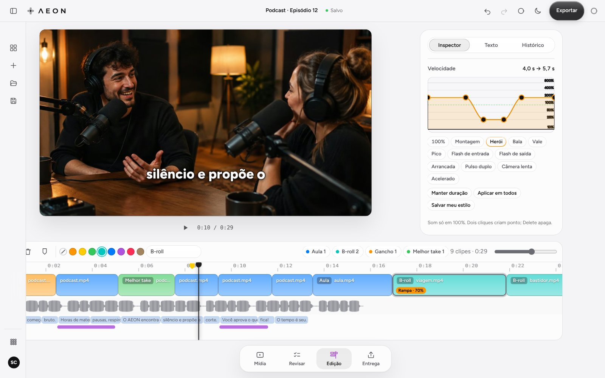

Silêncio fora, num toque.
Os respiros somem e os clipes se juntam. Você aprova.
Produto
Edição completa na linha do tempo. A IA ajuda quando você quiser.

Como funciona
 1
1
Do computador ou direto do SOBEDESCE.
 2
2
Monte na linha do tempo. A IA sugere, você decide.
 3
3
Para o seu editor, ou o vídeo pronto.
Ao vivo
Os respiros somem e os clipes se juntam. Você aprova.
Transcrita na sua máquina.
Punch-in nas frases de ênfase.
Recursos

Transcrição na sua máquina.
Em lote, nunca no meio da palavra.
Punch-in nas frases de ênfase.
Corte, apare, mova, cores e etiquetas.
Cores e marcadores vão junto.
Histórico de cada passo.
Nada é enviado, movido ou apagado.

Um toque troca o tema.

Ecossistema
Do cartão à entrega, o AEON trabalha junto com as outras ferramentas, na mesma conta.
Chegando ao AEON
No painel inicial do app, quando ele abrir. Ela conversa e lê sua conta; a edição é sua.
Em desenvolvimento
Mac e Windows, com a sua conta Absolute ZRO.
Ainda sem download
Em desenvolvimento. Chega com a sua conta Absolute ZRO.